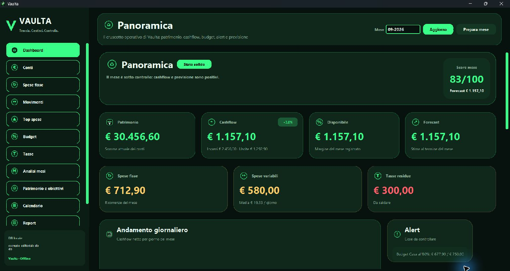

01
La tua panoramica
Saldo, entrate, uscite, spese fisse e budget residuo in una vista unica.
Vaulta · Windows · Linux da sorgenti
Una app desktop per leggere il mese, seguire il patrimonio e organizzare gli obiettivi. Inserisci tu i dati: restano nella cartella di Vaulta, sul tuo computer.

Vaulta nasce per unire lettura quotidiana, pianificazione mensile e analisi del patrimonio in un’esperienza chiara e locale.
Funzioni
Saldo, entrate, uscite, spese fisse e budget residuo in una vista unica.
Conto principale, risparmi e investimenti nell’ordine che scegli, anche nelle altre schede.
Registra incassi, spese e trasferimenti. Consulta mesi passati, tutto lo storico o un periodo scelto.
Vedi subito quanto puoi ancora spendere e dove stai sforando.
Importi, residui e pagamenti delle tasse. Calendario e ricorrenze basati sui dati che inserisci.
Analizza un mese, confronta due mesi e segui i conti. Destina agli obiettivi una quota del risultato mensile.
Seleziona una spesa, modifica i dati e chiudila come saldata. Resta disponibile in Spese archiviate.
Patrimonio, obiettivi e previsione nello stesso spazio. Applica agli obiettivi una percentuale di incassi meno spese.
Consulta i report, esporta i dati disponibili in CSV e conserva copie locali del tuo archivio.
Screenshot
Schermate reali con dati inventati.
Prezzo
Vaulta si acquista una volta. Su Windows avvii l’eseguibile; su Linux usi i sorgenti Python seguendo la guida.
FAQ
Sì. Vaulta è un software desktop e i dati vengono gestiti localmente sul computer.
No. È una licenza permanente con pagamento una tantum.
Il pacchetto Windows contiene l’eseguibile. Per Linux sono disponibili i sorgenti Python: occorre installare le dipendenze secondo la guida. Non è un eseguibile Linux precompilato.
No. Vaulta conserva i dati nella propria cartella sul computer e non li invia a servizi cloud. Conserva copie di backup e proteggi la cartella dell’app.
No. Inserisci tu conti, saldi e movimenti. Vaulta non collega conti reali e non esegue pagamenti.
Scegli una percentuale del risultato positivo del mese, cioè incassi meno spese. Applichi tu il mese all’obiettivo. Puoi sottrarre un mese in rosso, fino ad azzerare l’accantonato. Non viene spostato denaro tra conti.
La chiusura interrompe la ricorrenza e conserva la spesa nell’archivio. Registra l’ultimo pagamento nei Movimenti.
Le previsioni sono stime basate sui dati inseriti. I saldi ricostruiti senza un’apertura mensile salvata sono indicati come stimati.
Vaulta
Più controllo, meno dispersione. In una app desktop chiara e locale.
Acquista Vaulta